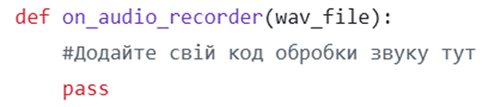
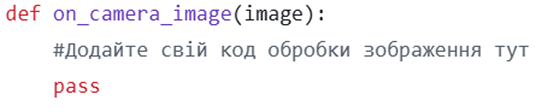
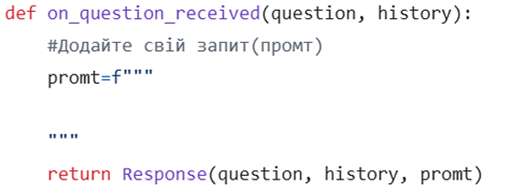

Лабораторні роботи
Обробка мовлення
Лабораторна робота присвячена технологіям розпізнавання мови. Учні працюють із мікрофоном, інтегрують OpenAI Whisper API та налаштовують пристрій на виконання команд, таких як відтворення звуку чи керування світлодіодами.
Розпочати роботу

Обробка зору
Учні знайомляться з основами комп’ютерного зору, використовуючи бібліотеку OpenCV. Вони програмують алгоритми виявлення облич та жестів, тестуючи їх у реальному часі за допомогою камери пристрою.
Розпочати роботу

Promt-engineering
Учні вивчають принципи роботи мовних моделей і вчаться правильно формулювати запити. Вони експериментують із запитами до GPT, використовуючи пристрій для генерації текстових або аудіо відповідей.
Розпочати роботу
